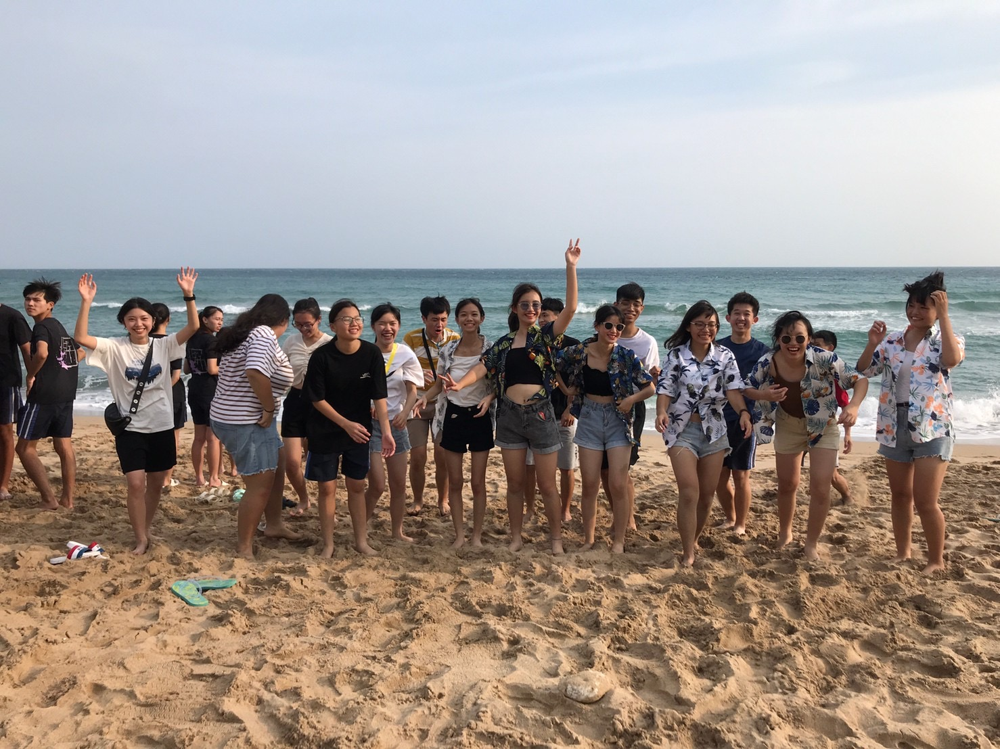
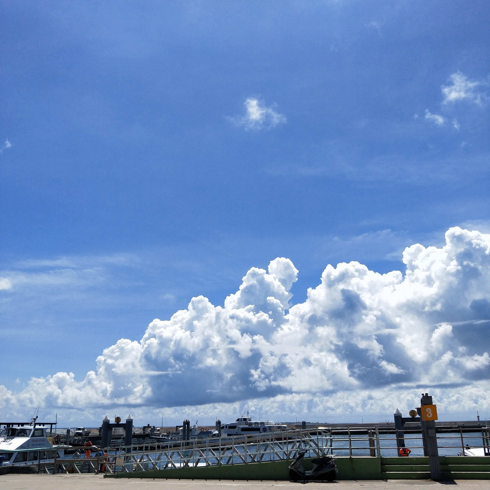
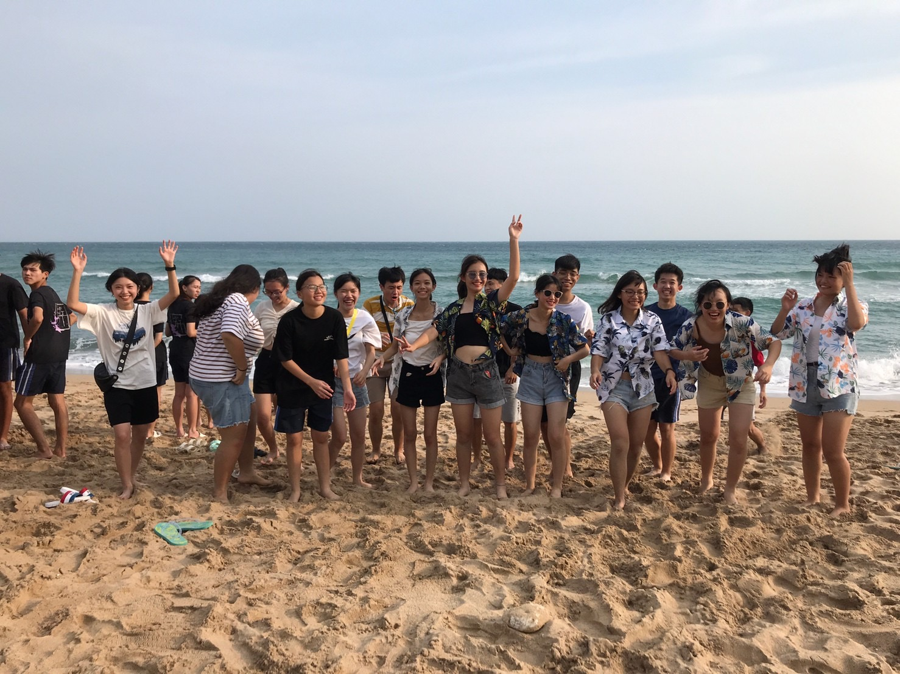
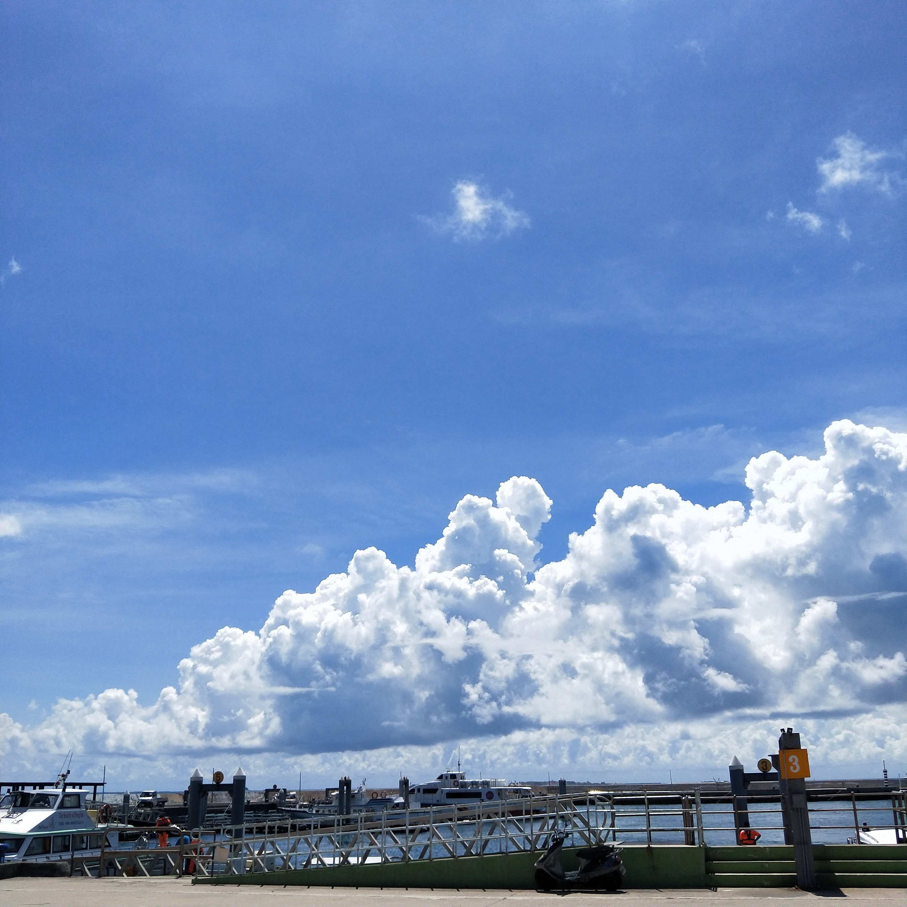

至今活到十九歲，去過不少台灣景點，還想再去合歡山看雪、去墾丁看海、到花東愜意的旅遊，或是到山上體驗滑翔翼，都是我想再度拜訪與沒做過的。除了台灣的景點，我也想到國外多走走看看，見識不一樣的風俗民情、建築風格、飲食文化等等，歐洲地區是我特別想旅行的地方，當然也想趁海平面逐漸上升前，到馬爾地夫享受美好的假期，若我擁有龐大的財富，我一定會將這世界的各個地方都走一遍，並為美麗的風景拍下值得讓我留念的相片。從小，各個行業的工作我都曾幻想過，演員、唱跳歌手、模特兒、空姐、服裝設計師、彩妝設計師、美髮設計師、作曲家，都曾閃現在我的腦袋裡，但漸漸地發現要做自己剛好喜歡的工作仍不簡單，我甚至不太了解自己真正喜歡的是什麼，就一路讀到了現在，並意外的上了資訊傳播學系，目前的想法是自然而然、隨遇而安的心態，未來的職業可以說是沒有甚麼想法，或是不敢想像，也不期待未來工作的薪資能有多高，能平凡的過好日子就好。
 武嶺

墾丁

澎湖
武嶺

墾丁

澎湖